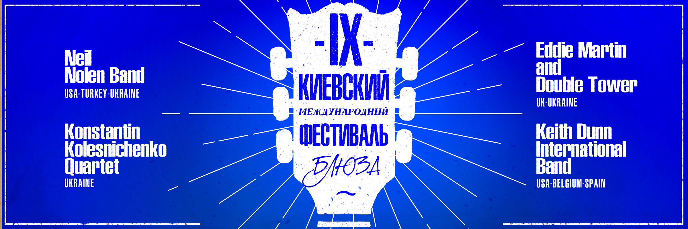
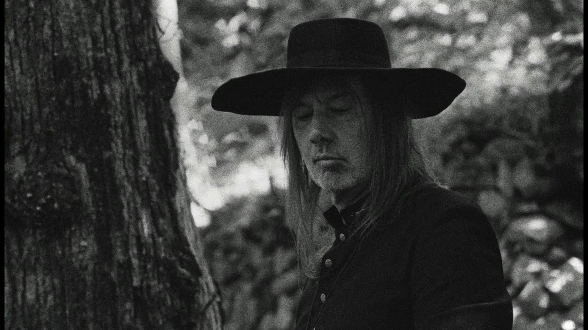

Ulichnaya Eda (“Street food”) platform is organizing a new party, and this time it will be held in the format of “kvartirnik” (“flat party”) that guarantees homely coziness and warm atmosphere. Guests of the event will enjoy music covers of “Hotel California” and “Wind of Change”, play chess and Alias, taste rolls with cherries and pastry cream, hot raspberry wine and Belgian potatoes with hot cheese sauce. The admission to the party is free for children under 15, multi-child families, physically challenged guests, ATO veterans and those who have birthday on the festival dates.
When: Where:Platforma Art Zavod
IX International Kyiv Blues Festival

The IX blues festival in Kyiv will gather artists from the six different countries. The festival will start with the performance of Neil Nolan who has been playing his signature blues hits around the world for more than 30 years. The musician has won the hearts of audiences in Australia, Canada and Europe. His Kyiv performance will be supported by Philip Beliaev (guitar), Erdem Tonguc (piano) and Alexander Kucherin (drums). The list of the festival participants also includes Konstantin Kolesnichenko`s quartet from Dnipro, British bluesman Eddie Martin and American singer Keith Dunn. The festival will be conducted by Max Tavrichesky – Ukrainian bluesman and producer.
When: Where:Cinema House
Jozef Van Wissem

The Dutch musician Jozef Van Wissem is the master of lute and classical music. His work was noted not only by numerous fans but also the jury at the Cannes Film Festival, where Jozef won the award for the score of Only Lovers Left Alive in 2013. The musician has extensive experience in writing music for movies and advances in this path apart from tours around the globe.
When: Where:House of Organ and Chamber Music, Lviv